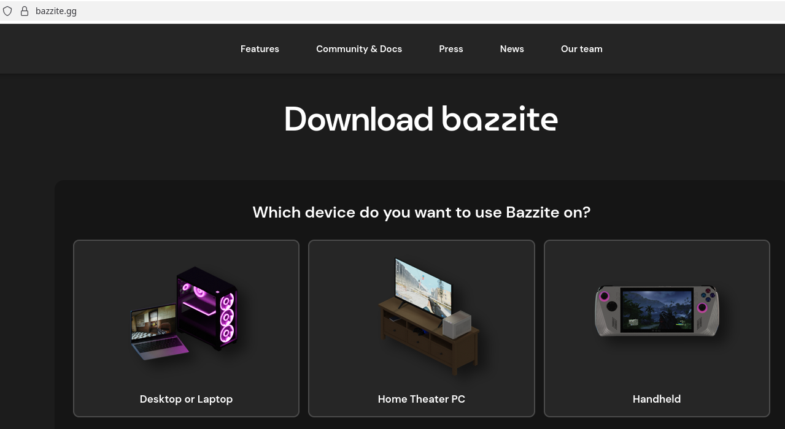
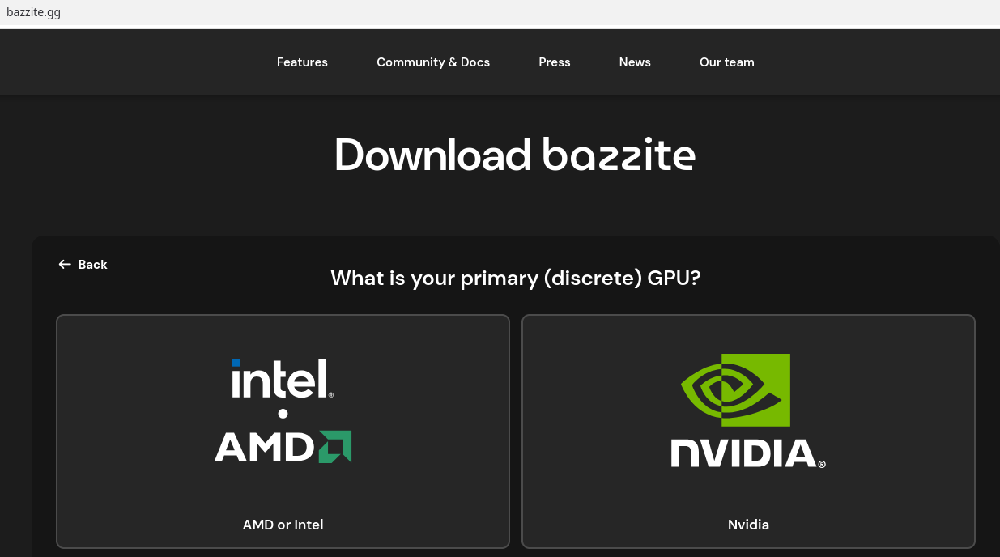
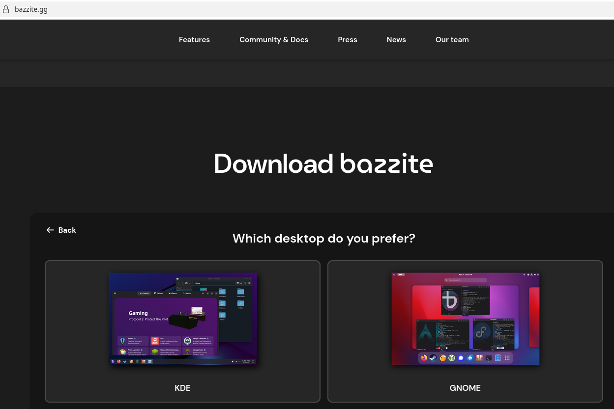
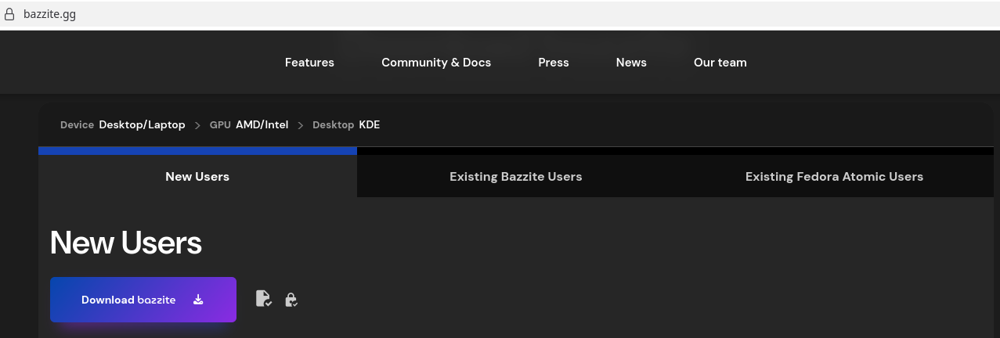
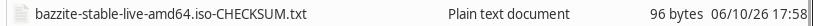
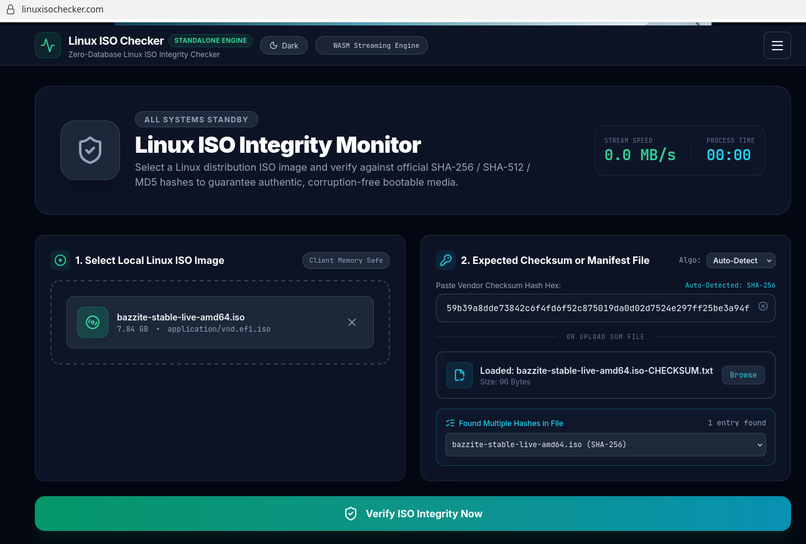
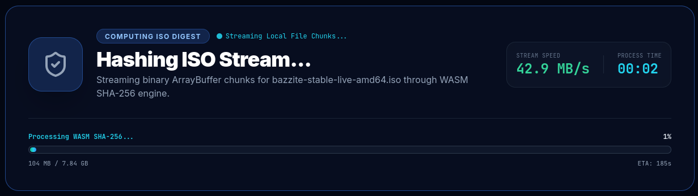
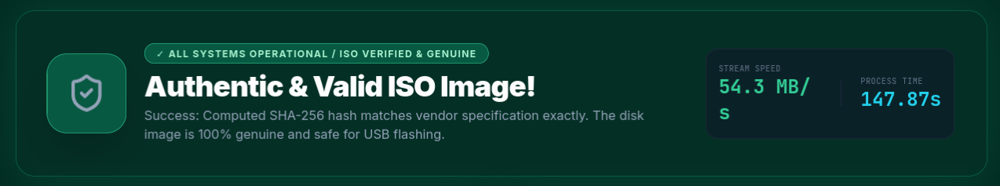

Download safety
How to verify a Bazzite Download

Visit the official Bazzite download page and click on the version you want to download. (i.e. Desktop, Home Theatre or Handheld).

Choose your primary GPU (NVIDIA, AMD, or Intel).

Choose your desktop environment. (KDE or GNOME)

Click the download button to download the ISO image and the file with a tick icon to download the checksum file.

Within a file explorer go to your Downloads folder and rename the checksum file to "Bazzite.Sha256" or "BazziteChecksum.txt".

Go to the Linux ISO Checker homepage.
Click "browse files" or drag the ISO image from your Downloads folder into the "Select Local Linux ISO Image" box.
Click "browse" next to "Upload Manifest File" and choose the renamed Bazzite checksum file.
Click "Verify" to compare the calculated checksum with the expected value.

Depending on the file size, the verification process may take a minute or two to process.
When the process has completed, you will see the results of the verification.
